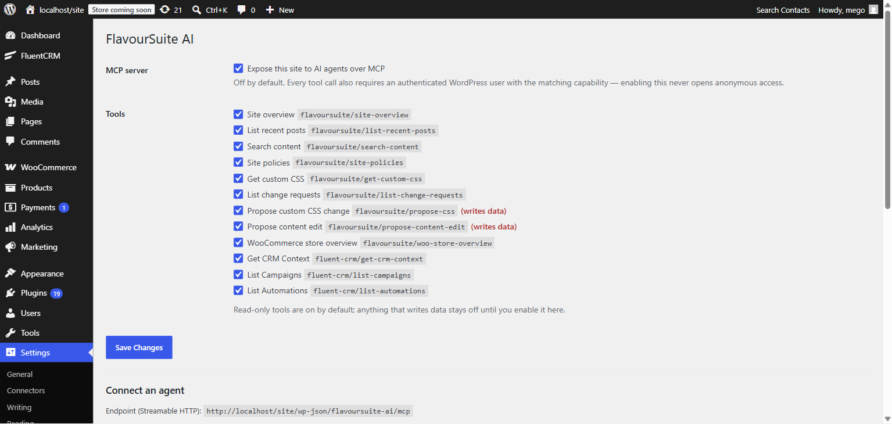
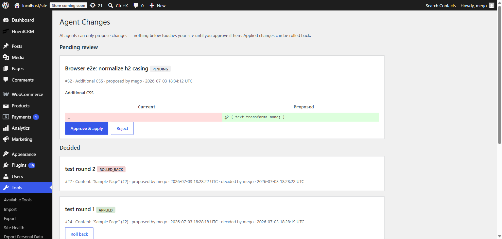

FlavourSuite AI documentation
Everything you need to connect AI agents — Claude, Cursor, ChatGPT, and any MCP client — to your WordPress site, safely.
Quick start
- Install and activate the plugin (WordPress 6.9+, PHP 7.4+).
- Go to Settings → FlavourSuite AI and switch on “Expose this site to AI agents over MCP”. Until you do, the endpoint doesn't exist — installing changes nothing.
- Create an Application Password: Users → Profile → Application Passwords, give it a name like
my-agent, and copy the generated password. Agents authenticate as this user and can only see and do what this user can. - On the settings page, paste the Application Password into the snippet builder — it produces a finished configuration to copy into your MCP client (per-client guides below).
- Ask your agent something: “Give me an overview of my site.”

Every tool has its own switch. Read-only tools are on by default; anything that writes data (the propose tools) stays off until you enable it.
Connect your agent
Your endpoint is https://example.com/wp-json/flavoursuite-ai/mcp (shown on the settings page). Authentication is HTTP Basic with your WordPress username and the Application Password, sent as a header:
Authorization: Basic <token>echo -n 'yourname:xxxx xxxx xxxx xxxx' | base64 (the spaces WordPress shows in the password are fine — it ignores them).
Which client? If you're not a developer, use Claude Desktop — it's a one-time copy-paste into a config file, no terminal needed. Developers working in an editor will want Claude Code, Cursor, VS Code, or Codex, which all take the same URL + header.
Claude Desktop (best for non-developers)
- Install Node.js if you don't have it (the standard installer, all defaults).
- In Claude Desktop open Settings → Developer → Edit Config. That opens
claude_desktop_config.json(on Windows:%APPDATA%\Claude\, on Mac:~/Library/Application Support/Claude/). - Paste this, with your site's URL and the token from the settings-page generator, save, and restart Claude Desktop:
{
"mcpServers": {
"flavoursuite": {
"command": "npx",
"args": [
"mcp-remote",
"https://example.com/wp-json/flavoursuite-ai/mcp",
"--header",
"Authorization: Basic <token>"
]
}
}
}Your site's tools appear under the 🔌 icon in new conversations.
mcp-remote bridge? Claude's custom connectors UI (Settings → Connectors → Add custom connector) connects from Anthropic's cloud, not your machine, and authenticates with OAuth — so it can't send an Application Password header and can't reach local/intranet sites. The bridge above runs on your computer and works everywhere. A future FlavourSuite version may add OAuth so the connector UI works directly.
Claude Code
claude mcp add --transport http flavoursuite \
https://example.com/wp-json/flavoursuite-ai/mcp \
--header "Authorization: Basic <token>"Verify with claude mcp list — the server should show ✓ connected. Add --scope user to make it available in every project.
Cursor
Add to .cursor/mcp.json in your project (or ~/.cursor/mcp.json globally; also editable via Settings → Tools & MCP):
{
"mcpServers": {
"flavoursuite": {
"url": "https://example.com/wp-json/flavoursuite-ai/mcp",
"headers": {
"Authorization": "Basic <token>"
}
}
}
}VS Code (GitHub Copilot)
Copilot's agent mode supports MCP natively. Add to .vscode/mcp.json in your workspace (or your user profile's mcp.json) — note the top-level key is servers, not mcpServers:
{
"servers": {
"flavoursuite": {
"type": "http",
"url": "https://example.com/wp-json/flavoursuite-ai/mcp",
"headers": {
"Authorization": "Basic <token>"
}
}
}
}Codex (OpenAI)
Add to ~/.codex/config.toml (shared by the Codex CLI and IDE extension). Use http_headers, not bearer_token_env_var — WordPress expects Basic auth, not a Bearer token:
[mcp_servers.flavoursuite]
url = "https://example.com/wp-json/flavoursuite-ai/mcp"
http_headers = { "Authorization" = "Basic <token>" }Verify by running /mcp inside a Codex session.
ChatGPT
ChatGPT adds remote MCP servers via Settings → Connectors → Advanced → Developer Mode (Plus/Pro/Business plans), then Add custom connector with your endpoint URL. Two limitations to know: connections originate from OpenAI's cloud (your site must be publicly reachable over HTTPS), and its custom-connector auth supports OAuth or pasted tokens sent as Bearer — not the Basic scheme Application Passwords use. Until FlavourSuite ships OAuth support, use one of the clients above with ChatGPT-side workflows, or front your endpoint with an OAuth proxy.
Other clients (Cline, Windsurf, LibreChat, …)
Any MCP client that supports Streamable HTTP works: give it the endpoint URL and the Authorization: Basic <token> header — the JSON shape is usually identical to the Cursor example above.
What agents can do
| Tool | What it does | Default |
|---|---|---|
site-overview | WordPress/PHP versions, active plugins, content counts (administrators only) | on |
list-recent-posts | Recent published entries of any public post type | on |
search-content | Full-text search across public content, with snippets | on |
site-policies | Privacy, terms, returns, shipping, FAQ and contact pages with their text | on |
get-custom-css | Read the current Additional CSS | on |
list-change-requests | Status of the agent's proposals (pending / applied / rejected / rolled back) | on |
propose-css | Propose a change to Additional CSS — creates a pending change request | off |
propose-content-edit | Propose a new title/content for a post or page — same review flow | off |
woo-store-overview | WooCommerce product/order counts, currency (appears when WooCommerce is active) | on |
fluent-crm/* | CRM context, campaigns, automations (appears with FluentCRM 3.0+; no contact-level data) | on |
First prompts to try
- “Give me an overview of my site — what's installed and how much content is there?”
- “What do my shipping and returns policies say? Answer as if a customer asked.”
- “Search my site for everything mentioning gift cards and summarize it.”
- “How is the store doing — how many orders are processing right now?”
- With propose tools enabled: “The headings on my site feel cramped — propose a CSS improvement and I'll review it.”
Approvals: agent writes, your call
No tool writes to your live site. When an agent uses a propose tool, it creates a change request — a stored before/after pair — and gets back a review link. Nothing changes until a human approves it in wp-admin.
- Enable
propose-cssand/orpropose-content-editunder Settings → FlavourSuite AI. - The agent proposes; the proposal appears under Tools → Agent Changes as a red/green diff.
- You Approve & apply, or Reject. Applied changes keep a Roll back button that restores the exact before-state.

Content edits are additionally covered by WordPress revisions, so there's always a second way back.
Security model
- Off by default. The MCP endpoint isn't even registered until an administrator enables it.
- No anonymous access. Every request must authenticate as a real WordPress user via an Application Password; revoke the password and access ends immediately.
- Capabilities enforced per call. Each tool re-checks the connected user's WordPress capabilities — an editor's agent can't read admin-only data.
- Writes are proposals. Applying a change re-checks the approver's capabilities at click time, behind a nonce, in wp-admin.
- Audited. The settings page shows who called which tool, when, and whether it succeeded. Arguments and results are never stored.
- Nothing leaves your site. No API keys, no outbound requests. Agents connect to you.
Troubleshooting
The agent can't connect (401 / unauthorized)
- Your site must use HTTPS. WordPress disables Application Passwords over plain HTTP on live sites — this is the most common cause. (Local development environments are exempt.)
- Check the Base64 token: it must encode
username:application-password— your login name, not your email, and the application password, not your account password. - Some security plugins disable Application Passwords entirely; check their settings.
The endpoint returns 404
- The master switch is off — enable it under Settings → FlavourSuite AI. The route genuinely doesn't exist while disabled.
- Permalinks may need a refresh: Settings → Permalinks → Save.
A tool is missing from the agent's list
- Propose tools are off by default — enable them per tool in settings.
- WooCommerce and FluentCRM tools only appear while those plugins are active (FluentCRM 3.0+).
- After changing settings, some clients cache the tool list — reconnect or restart the client.
Applying a proposal says it's stale
That's the safety net working: the CSS or post changed after the agent proposed. Reject the request and ask the agent to propose again from the current state (it will re-read via get-custom-css or the content tools).
Something not covered here? Open an issue on GitHub.